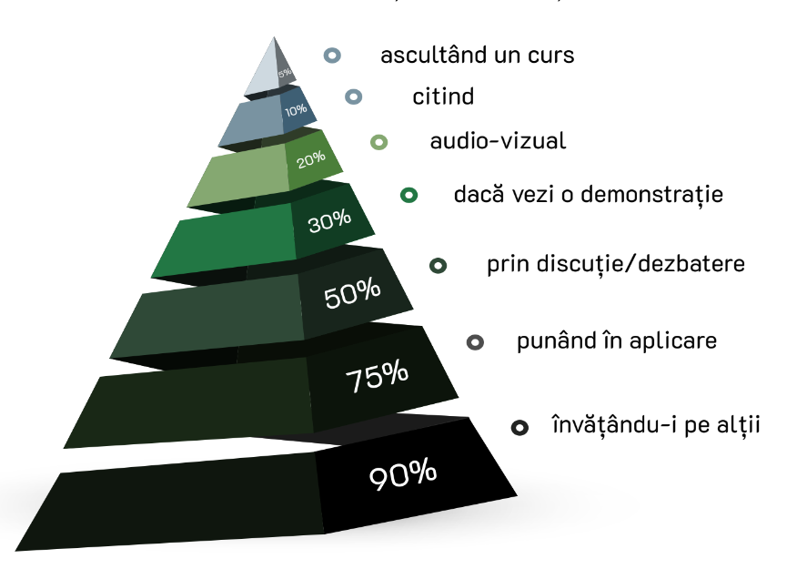

Acum că știm destinația, urmează să descoperim modalitatea prin care putem ajunge acolo! Pentru a facilita transportul, poți utiliza diverse aplicații, precum: Google Maps, Moovit, Tranzy, care îți vor oferi informații detaliate despre traseele de transport care te interesează și opțiunile alternative pentru a ajunge la destinație. Cu timpul, vei identifica câteva rute principale pe care le vei utiliza frecvent pentru a te deplasa.
🚌 Linia 35 Zorilor (Cămin Observator)–Central–Gara
🚌 Linia 24B Gheorgheni–Iulius Mall–Centru—Vivo!
🚌 Linia 45 Zorilor (Cămin Observator)–Buna Ziua–Iulius Mall
🚌 Linia 43P Cart. Zorilor (Cămin Observator)—Vivo!
🚌 Linia 50 Cartierul Zorilor—Bd. Muncii
🚌 Linia 48 și 14 Cămine Mărăști—Bd. Muncii
🚌 Liniile 6 și 7 Mărăști—Centru—Mănăștur
🚌 Liniile 5 și 4 Mărăști—Centru—Piața Gării
🚌 Linia 25 Mărăști—Iulius Mall
Vinerea Verde este ziua din săptămână când transportul cu autobuzul este gratuit, așa că nu ezita și profită de ocazie să faci o plimbare în jurul Clujului!
Biletele de călătorie pot fi cumpărate după urcarea în autobuz cu cardul bancar, înainte de a urca prin SMS cu numărul liniei la numărul 7479, prin aplicația 24Pay sau de la automatele de bilete din stații.
Prin utilizarea cardurilor non-bancare menționate anterior, poți beneficia de 120 de călătorii gratuite lunar, valabile pe toate liniile, dacă ai sub 26 de ani.
Pentru a obține un astfel de abonament CTP, care ulterior va fi reîncărcat lunar la automatele de bilete, trebuie să ai la tine un carnet de student, buletin și un card studențesc pe care îl vei prezenta la un ghișeu de bilete.
Reîncarcă lunar cardul CTP la automatele de bilete înainte de data expirării termenului de valabilitate. Parola este "1234"! Evită coada de la ghișee prin utilizarea stațiilor electronice.
După ce abonamentul este validat sau biletul este compostat, durata călătoriei este de 45 de minute pe o singură linie.
Acum că am aflat unde și cu ce mergem, o altă întrebare importantă este: "Unde stăm?". Dacă ești student în anul I și dorești să locuiești în cămine, ai posibilitatea de a sta în campusul din Observator sau Mărăști.
În cazul în care te afli în această situație, iată câteva sfaturi utile pentru tine:
Dacă nu te-ai alăturat încă grupului de pe Facebook al căminului tău, ar fi bine să o faci acum. În grup, vei găsi anunțuri de interes general. De asemenea, poți profita de oportunitatea de a cumpăra diverse lucruri necesare la începutul anului de la studenți care nu mai stau în cămin (frigiderele care sunt vândute de la o generație la alta).
Fiecare etaj dispune de o spălătorie, care funcționează pe bază de programare. Regulile pot varia în funcție de cămin, dar un principiu universal este să nu pui la spălat peste programarea altcuiva. Totodată, fiecare etaj are un oficiu (bucătărie), care dispune de două plite electrice. Nu uita să lași curat după tine când ai terminat de gătit!
Socializează cu colegii de cameră și alți prieteni, mergi la petreceri și bucură-te de atmosfera studenției!
O altă provocare apare: "Ce mâncăm și de unde?" Comandatul zilnic poate fi costisitor, mai ales când bugetul este limitat, dar avem o soluție mai bună: cantina. Atât cea din campusul Observator, cât și cea din campusul Mărăști, oferă mâncare bună la prețuri accesibile.
O cantină mai puțin cunoscută este Cantina Primăriei. Se află pe Strada Émile Zola, în centru, în apropierea Facultății de Construcții. Aici, mâncarea este mai variată și prețurile, chiar dacă mai ridicate decât la cantinele din campus, sunt încă accesibile.
Uneori, chiar și atunci când avem suficiente resurse, simțim că nu este îndeajuns. Din acest motiv, am adunat o serie de resurse de învățare gratuite care ne-au ajutat și pe noi să ne lămurim anumite noțiuni:
Fiecare dintre noi are un stil unic de învățare, așa că nu ezita să încerci diverse abordări până când vei găsi ce te motivează.
Conform Piramidei învățării, dezvoltată de Institutul NTL pentru Știință Comportamentală Aplicată, există diferențe în eficiența diverselor metode de învățare. Această teorie subliniază importanța diversificării metodelor pentru a înțelege și reține informația în profunzime.
Asigură-te că dormi suficient pentru că informația să se fixeze în mintea ta. Evită nopțile albe înaintea examenului, deoarece odihna este esențială pentru memorare și performanță.
Fii tu însuți și nu te măsura după cât de mult faci într-o zi. Acordă-ți timp pentru tine și fă și lucruri care te bucură, chiar în mijlocul învățatului. Ai încredere în tine!
🕐 Prioritizează! Vezi care sunt disciplinele la care nu te descurci atât de bine.
🕐 Învață să spui nu! E în regulă dacă nu reușești să ajuți pe toată lumea și te poți distra pe cinste chiar dacă pierzi una din multele petreceri în sesiune.
🕐 Motivația este un mit! Nu apare din senin, ci e influențată de consecințe, așteptări, emoții etc., așa că doar apucă-te de treabă.
🕐 Mănâncă elefantul pe bucăți! Împarte o sarcină complexă în pași mici și accesibili.
🕐 Regula de cinci minute. Dacă te copleșește dificultatea unui task, ia întâi cel mai mic pas pe care îl poți face în direcția dorită. Fă asta pentru cinci minute și gata. E foarte probabil să vrei să continui, dacă tot ai început.
🕐 Și multitasking-ul e un mit! Ce se întâmplă, de fapt, e că îți muți foarte repede atenția de la un lucru la altul, ceea ce e obositor pentru creier și nu va duce la cele mai calitative rezultate.
🕐 Odihnește-te și fă și ce îți place! Dai randament în învățare doar până la un anumit punct, apoi îți furi singur pălăria, cum se zice.
Totuși, îți stârnește teamă ceea ce ar putea urma? Ai vrea să afli mai multe păreri de la studenții care deja au experimentat viața de student? Iată câteva sfaturi din partea noastră, a celor din BEST:
“Experiența mea strict de studentă a fost una tare frumoasă până acum. Am încercat pe cât posibil să profit de toate oportunitățile care mi-au apărut în cale. În anul II de facultate am intrat în BEST, iar acest lucru mi-a făcut mai frumoasă experiența. Am cunoscut oameni noi, inclusiv la nivel internațional, și am învățat să-mi depășesc fricile. De asemenea, am profitat și de facilitățile oferite de facultate, în această vară desfășurându-mi practica printr-o mobilitate Erasmus, în Finlanda. Cât despre facultate în sine, încerc să văd lucrurile pozitive, în special oamenii pe care i-am cunoscut în cadrul acesteia, precum și ce am învățat legat de mine. Chiar dacă anul III a fost unul tare dificil, am reușit să trec și de acesta, descoperind ce aș vrea să fac mai departe, chiar dacă nu este ceva legat strict de domeniul pe care îl studiez.” - Andi, Facultatea de Electronică, Telecomunicații și Tehnologia Informației
“Facultatea nu a fost stresantă în timpul anului. Ai timp de viața privată, de proiectele proprii și chiar de joburi pentru bani de buzunar. Perioadele foarte stresante și solicitante sunt cele de presesiune și sesiune, în care toată lumea învață și recapitulează toată materia din timpul semestrului. Unii profesori sunt foarte faini și pasionați, alții nu sunt deloc. Ai resurse pentru toate materiile și te poți axa pe cele care îți plac cel mai mult.” - Sami, Facultatea de Automatică și Calculatoare
“Experiența mea de student a fost foarte faină. Mi-am făcut foarte mulți prieteni noi, am învățat multe, fac voluntariat în cadrul facultății și asta m-a ajutat să cunosc și mai mulți oameni faini. Mi-am ieșit cât de mult am putut din zona de confort fiindcă, vrei nu vrei, nu ai de ales. Am dat de materii mișto și de materii grele sau nu așa de interesante. Am trecut prin prima sesiune care a fost inițial un șoc. Dar overall am învățat foarte multe atât pe plan academic cât și pe plan personal.” - Iulia, Facultatea de Inginerie Electrică